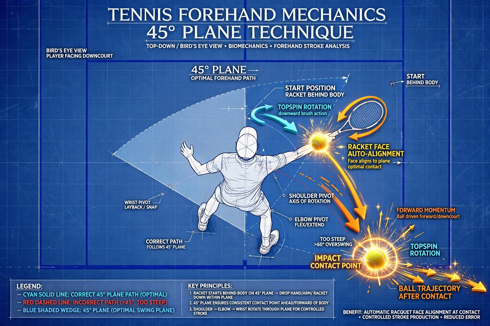

Tennis Biomechanics: The 45° Forehand Swing Plane, Arm-Chest Coupling & Figure-8 Force Vectors
The Core Biomechanical Axiom: The hitting arm must operate within a strict $45^\circ$ forward arc relative to the thoracic chest wall. Pulling the arm past $45^\circ$ behind the torso severs core kinetic coupling, weakens joint structure, and drastically increases rotator cuff and labrum injury risk. Integrating this arc into a continuous horizontal Figure-8 ($\infty$) swing path produces frictionless centripetal acceleration and effortless racket head speed.
1. The 45° Arm-Chest Structural Coupling
Elite ball striking in modern tennis relies on skeletal alignment and muscle group anchoring rather than isolated arm pulling. When the hitting hand is kept in front of the sternum within a $45^\circ$ forward arc, the humeral head is firmly supported inside the glenoid cavity by the pectoralis major and subscapularis muscles.

Figure 1: Top-Down Architectural Blueprint — The 45° anterior arm-chest coupling zone and contact geometry.
The 3 Inviolate Principles of the 45° System
- Hand Position: The hand must remain in front of the chest plane during the unit turn. The hitting elbow stays low, close to the torso ($10 - 15\text{ cm}$), with the wrist in a supple, neutral extension.
- Body Position: Power is generated via hip and thoracic rotation driven by ground reaction forces ($GRF$). The arm does not pull or muscle the ball independently.
- Racket Position: The racket head descends and tracks along the $45^\circ$ inclined plane, guided dynamically by torso angular momentum. At contact, the racket face auto-aligns perpendicular to the target via rotational inertia.

Figure 2: 3D Kinetic Vector Trajectories — Gravitational drop along the 45° inclined plane transitioning into horizontal core uncoiling.
2. Physics of the Horizontal Figure-8 (Infinity Loop)
Linear strokes require the racket to come to an abrupt standstill at the back of the swing before accelerating forward. In contrast, curvilinear motion utilizes **centripetal acceleration** to continuously redirect the force vector without decelerating the racket head:
Where $m$ is the effective mass of the racket-forearm system, $v$ is tangential racket head velocity, and $r$ is the dynamic rotational radius.
By smoothly transitioning through the crossing node of a horizontal Figure-8, the player avoids sudden kinetic jerks, preserves accumulated momentum, and releases maximum kinetic energy ($RHS$) directly into the ball at contact.
Figure 3: Mathematical Vector Map of the Figure-8 Forehand Trajectory showing continuous curvature and kinetic handover.
3. The 5 Kinematic Phases of the Forehand Flow
| Phase | Biomechanical Action | Key Checkpoint |
|---|---|---|
| 1. Unit Turn | Torso coils $45^\circ - 60^\circ$ as a single block; both hands support the racket. | Hand in front of chest; racket tip points upward at $45^\circ - 60^\circ$. |
| 2. Gravitational Drop | Non-dominant hand releases; racket descends along the $45^\circ$ inclined plane. | Elbow remains low and tucked close to the ribs ($10 - 15\text{ cm}$). |
| 3. Lag & Snap | Pelvis uncoils forward; hand leads; racket lags creating peak elastic torque. | Wrist remains in relaxed passive extension; no premature muscular pull. |
| 4. Ball Contact | Steep low-to-high linear displacement meeting the ball in the kinetic sweet spot. | Impact occurs $30 - 40\text{ cm}$ in front of lead hip; face $80^\circ - 85^\circ$ closed. |
| 5. Follow-Through | Uninhibited centrifugal energy release into a windshield wiper finish. | Racket wraps naturally across the chest; no sudden braking or decelerating. |

Figure 4: Archival Technical Coaching Notes — Detailed field analysis on horizontal Figure-8 force vectors and the 5-phase kinetic breakdown.
4. Diagnostic Breakdown of Common Mechanical Faults
Fault 1: The Hyper-Retracted Arm (>45° Behind Torso)
When players attempt to generate power by pulling their arm far behind their back, the arm disconnects from the thoracic cage. This causes chronic late contact, an open stringbed, and excessive shear stress on the anterior shoulder capsule.
Fault 2: The "Chicken Wing" Flared Elbow
Flipping the elbow upward and away from the body ($>120^\circ$) breaks the $45^\circ$ swing plane. The stroke degenerates into an arm swipe that lacks core weight transfer and severely strains the lateral elbow tendons.
Fault 3: Arming the Stroke (Premature Biceps Pull)
Flexing the arm before the hips have uncoiled chokes the stretch-shortening cycle ($SSC$). The ball drops flat into the net or lacks penetrating topspin depth.
5. Instructional Video Analysis
6. Prescriptive Training Protocols & The 45° Wall Drill
The 45° Wall Calibration Drill: Stand with your back one arm's length from a flat wall or back fence. Assume your athletic stance and execute shadow unit turns. If your racket frame or knuckles strike the wall behind you, your arm has exceeded the $45^\circ$ threshold. Perform 20 repetitions dropping the racket along the $45^\circ$ plane in clear space.
Mirror Figure-8 Infinity Drill
Stand before a full-length mirror. Trace slow, continuous horizontal Figure-8 loops with your racket, timing each complete cycle to 2 seconds. Ensure the intersection node crosses directly in front of your sternum and your hand never breaches the coronal plane of your back.
The 1-2 Cadence Freeze Drill
Have a partner drop balls from a $45^\circ$ forward angle. Count out loud: *"1"* as the ball bounces (verifying the racket is at the bottom of the $45^\circ$ drop), and *"2"* at impact. Freeze dead at contact to confirm your hand is $30 - 40\text{ cm}$ in front of your front hip.
Conclusion
Mastery of the modern forehand is founded on strict geometric boundaries and fluid physics. By constraining the hitting arm within the **$45^\circ$ forward chest arc** and guiding the racket through a continuous **horizontal Figure-8 loop**, players eliminate muscular tension, unleash devastating racket head speed, and ensure long-term joint health.